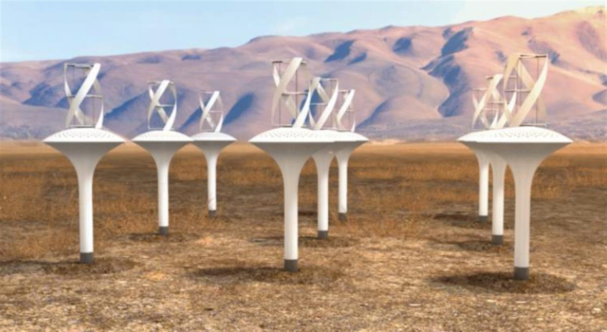
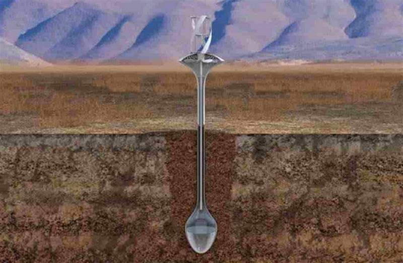
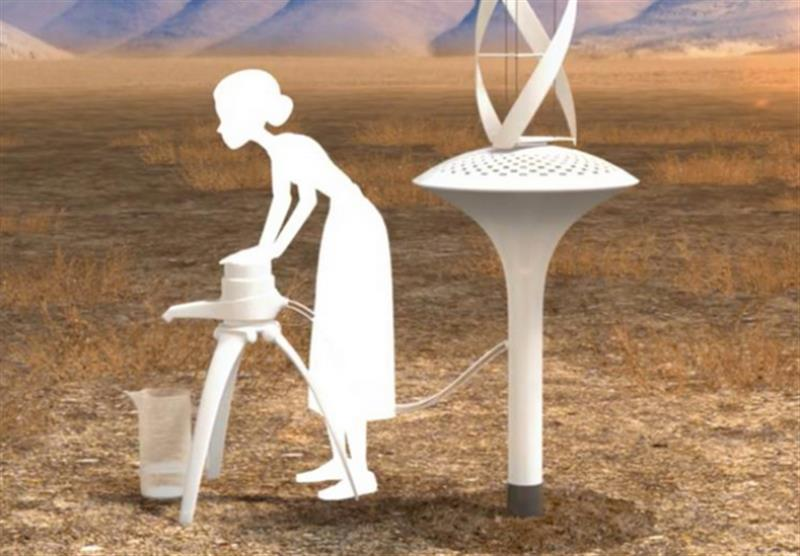

WaterSeer™ condenses pure water from the air without power or chemicals. It is green, sustainable, simple, low-maintenance, easily deployed and scalable for any community. VICI-Labs worked with UC Berkeley and the National Peace Corps Association to develop a device that yields up to 37 liters of pure water a day! A WaterSeer™ Orchard will provide enough clean water for an entire community.

One in five people around the world, more that 1 billion, live in areas of water scarcity. It is hard to imagine a day without an abundance of clean, safe water. We drink our fill, shower and bathe daily, water our lawns, wash our clothes and dishes knowing that clean, safe water is an unquestioned condition of our lives. Yet, throughout the world today, one in three people do not have the daily minimum, 7.1 cups of water needed to survive. Worldwide, a child dies every 90 seconds for lack of clean drinking water, nearly 1000 a day. Daily nearly 10,000 people die from dehydration and waterborne disease.
Open on original site ↗WaterSeer™ eliminates this chronic and tragic burden by providing access to clean, safe drinking water, right where people live, by extracting water directly from the air.
READ MORE: WaterSeer


SOURCE: WaterSeer